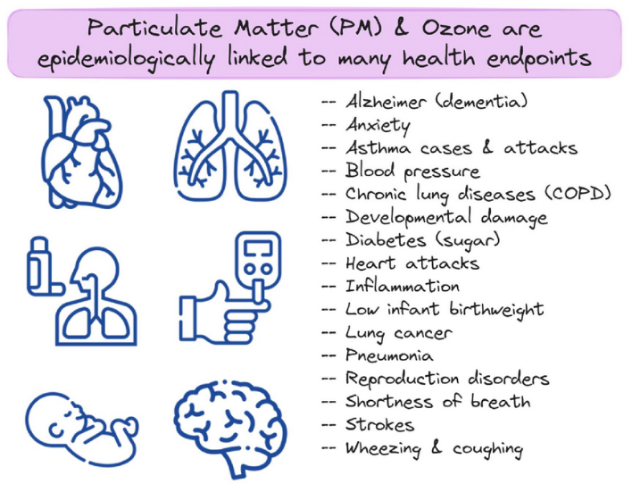
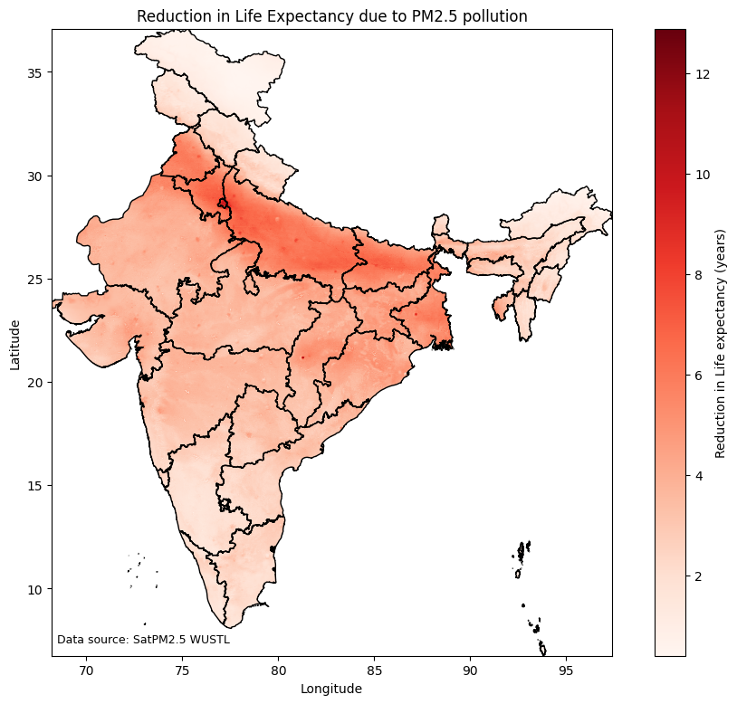

annual_average_pm25 = 35.5
who_standard = 5
life_expectancy_reduction = (annual_average_pm25 - who_standard) * 0.098
life_expectancy_reduction2.9890000000000003We are all worried about air pollution because it affects our health. Air pollution affects our lungs, hearts and brains.

In this tutorial, we will learn to estimate how air pollution affects our life expectancy.
The relation between air pollution and life expectancy was scientifically proved by researchers at the Energy Policy Institute at the University of Chicago (EPIC).. They found that every additional 10 µg/m³ of PM2.5 (more than the W.H.O annual standard of 5µg/m³) would reduce life expectancy by 0.98 years. You can read more about how AQLI numbers were reached here: AQLI methodology.
Using this research, we can now convert any region’s annual average PM2.5 concentration data into its impact on life expectancy in that region, using the following formula:
\(Life Expectancy Reduction= (Observed Annual Average of PM2.5 -W.H.O Standard) * 0.098\)
In Compliance with Air Quality Standards tutorial, we calculated that the city of Hyderabad had an annual PM2.5 average of 35.5 µg/m³ using monitor data. Let’s convert it into loss of life expectancy in Hyderabad due to air pollution.
annual_average_pm25 = 35.5
who_standard = 5
life_expectancy_reduction = (annual_average_pm25 - who_standard) * 0.098
life_expectancy_reduction2.9890000000000003By breathing an air of that has 35.5 µg/m³ annual average of PM2.5, Hyderabad has a lesser life expectancy of 3 years.
In the modeling results tutorial, we worked with WUSTL modeling results which has annual average PM2.5 concentration for every 0.01°x0.01° grid in India in 2023. We can thus calculate the reduction in life expectancy for every 0.01°x0.01° grid in India.
import xarray as xr
import geopandas as gpd
ds = xr.open_dataset('data/V6GL02.04.CNNPM25.AS.202301-202312.nc', chunks={})
# We assign the CRS explicitly
ds = ds.rio.set_spatial_dims(x_dim="lon", y_dim="lat")
ds = ds.rio.write_crs("EPSG:4326")
india = gpd.read_file("data/INDIA_STATES.geojson")
india = india.to_crs(ds.rio.crs)
#Crop the netcdf to the bounding box
clipped = ds.rio.clip(india.geometry, india.crs)
pm25_india = clipped['PM25']
pm25_india
#Convert all negatives pm25 values to NULL
pm25_india = pm25_india.where(pm25_india >= 0)pm25_india<xarray.DataArray 'PM25' (lat: 3034, lon: 2923)> Size: 35MB
dask.array<where, shape=(3034, 2923), dtype=float32, chunksize=(1750, 1682), chunktype=numpy.ndarray>
Coordinates:
* lat (lat) float32 12kB 6.755 6.765 6.775 ... 37.06 37.08 37.08
* lon (lon) float32 12kB 68.18 68.19 68.21 68.21 ... 97.39 97.39 97.4
spatial_ref int64 8B 0
Attributes:
units: ug/m3
long_name: Convolutional Neural Network derived Annual PM2.5 [ug/m^3]# Calculate life expectancy reduction in each grid
life_expectancy_reduction_grids = (pm25_india-who_standard)*0.098 #years
life_expectancy_reduction_grids = life_expectancy_reduction_grids.rename("Years")
life_expectancy_reduction_grids<xarray.DataArray 'Years' (lat: 3034, lon: 2923)> Size: 35MB
dask.array<mul, shape=(3034, 2923), dtype=float32, chunksize=(1750, 1682), chunktype=numpy.ndarray>
Coordinates:
* lat (lat) float32 12kB 6.755 6.765 6.775 ... 37.06 37.08 37.08
* lon (lon) float32 12kB 68.18 68.19 68.21 68.21 ... 97.39 97.39 97.4
spatial_ref int64 8B 0import matplotlib.pyplot as plt
import matplotlib.colors as mcolors
# plot pm2.5 raster
fig, ax = plt.subplots(figsize=(12,9))
life_expectancy_reduction_grids.plot(
ax=ax,
cmap="Reds",
cbar_kwargs={
"label": "Reduction in Life expectancy (years)",
}
)
# overlay boundary
india.boundary.plot(
ax=ax,
color="black",
linewidth=1
)
# labels and title
ax.set_title("Reduction in Life Expectancy due to PM2.5 pollution")
ax.set_xlabel("Longitude")
ax.set_ylabel("Latitude")
# data source annotation
ax.text(
0.01, 0.02,
"Data source: SatPM2.5 WUSTL",
transform=ax.transAxes,
fontsize=9,
color="black"
)
plt.savefig('aqli_india_2023.png')
plt.show()
In this tutorial, we learnt how to convert annual average PM2.5 concentration values to reductions in life expectancies. We used the Air Quality Life Index (AQLI) research to make this assessment. AQLI has calculated the reductions in life expectancy due to PM2.5 levels across the world. You can find these maps here: AQLI Maps